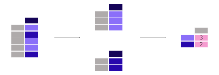

In [1]: import pandas as pd
- 泰坦尼克号数据
本教程使用以 CSV 格式存储的泰坦尼克号数据集。数据包含以下数据列
PassengerId: 每位乘客的 ID。
Survived: 表示乘客是否生还。
0表示是，1表示否。Pclass: 三个票类中的一个：
1等舱，2等舱和3等舱。Name: 乘客姓名。
Sex: 乘客性别。
Age: 乘客年龄（以年为单位）。
SibSp: 船上的兄弟姐妹或配偶数量。
Parch: 船上的父母或子女数量。
Ticket: 乘客票号。
Fare: 表示票价。
Cabin: 乘客客舱号。
Embarked: 登船港口。
In [2]: titanic = pd.read_csv("data/titanic.csv") In [3]: titanic.head() Out[3]: PassengerId Survived Pclass ... Fare Cabin Embarked 0 1 0 3 ... 7.2500 NaN S 1 2 1 1 ... 71.2833 C85 C 2 3 1 3 ... 7.9250 NaN S 3 4 1 1 ... 53.1000 C123 S 4 5 0 3 ... 8.0500 NaN S [5 rows x 12 columns]
如何计算摘要统计量#
聚合统计量#

泰坦尼克号乘客的平均年龄是多少？
In [4]: titanic["Age"].mean() Out[4]: 29.69911764705882
可以使用不同的统计量，并将其应用于包含数值数据的列。操作通常排除缺失数据，并默认跨行进行。
泰坦尼克号乘客的年龄中位数和票价中位数是多少？
In [5]: titanic[["Age", "Fare"]].median() Out[5]: Age 28.0000 Fare 14.4542 dtype: float64
应用于
DataFrame多个列的统计量（选择两个列会返回一个DataFrame，参见数据子集教程）是为每个数值列计算的。
可以同时为多个列计算聚合统计量。还记得第一个教程中的 describe 函数吗？
In [6]: titanic[["Age", "Fare"]].describe()
Out[6]:
Age Fare
count 714.000000 891.000000
mean 29.699118 32.204208
std 14.526497 49.693429
min 0.420000 0.000000
25% 20.125000 7.910400
50% 28.000000 14.454200
75% 38.000000 31.000000
max 80.000000 512.329200
除了预定义的统计量之外，还可以使用 DataFrame.agg() 方法定义给定列的特定聚合统计量组合
In [7]: titanic.agg(
...: {
...: "Age": ["min", "max", "median", "skew"],
...: "Fare": ["min", "max", "median", "mean"],
...: }
...: )
...:
Out[7]:
Age Fare
min 0.420000 0.000000
max 80.000000 512.329200
median 28.000000 14.454200
skew 0.389108 NaN
mean NaN 32.204208
有关描述性统计量的详细信息，请参阅用户指南的描述性统计量部分。
按类别分组的聚合统计量#

泰坦尼克号男性和女性乘客的平均年龄分别是多少？
In [8]: titanic[["Sex", "Age"]].groupby("Sex").mean() Out[8]: Age Sex female 27.915709 male 30.726645
由于我们感兴趣的是每个性别的平均年龄，因此首先对这两列进行子选择：
titanic[["Sex", "Age"]]。接下来，将groupby()方法应用于Sex列，以便为每个类别创建一个组。然后计算并返回每个性别的平均年龄。
计算列中每个类别的给定统计量（例如 mean 年龄，例如 Sex 列中的男性/女性）是一种常见模式。groupby 方法用于支持此类操作。这符合更通用的 split-apply-combine 模式
拆分数据成组
应用函数到每个组独立执行
组合结果成数据结构
在 pandas 中，应用和组合步骤通常一起完成。
在前面的示例中，我们首先明确选择了 2 列。如果未选择，mean 方法将通过传递 numeric_only=True 应用于每个包含数值数据的列。
In [9]: titanic.groupby("Sex").mean(numeric_only=True)
Out[9]:
PassengerId Survived Pclass ... SibSp Parch Fare
Sex ...
female 431.028662 0.742038 2.159236 ... 0.694268 0.649682 44.479818
male 454.147314 0.188908 2.389948 ... 0.429809 0.235702 25.523893
[2 rows x 7 columns]
获取 Pclass 的平均值意义不大。如果只对每个性别的平均年龄感兴趣，也可以在分组数据上支持列的选择（像往常一样使用方括号 []）
In [10]: titanic.groupby("Sex")["Age"].mean()
Out[10]:
Sex
female 27.915709
male 30.726645
Name: Age, dtype: float64

注意
Pclass 列包含数值数据，但实际上代表了 3 个类别（或因子），分别带有标签 '1'、'2' 和 '3'。对这些数据进行统计计算意义不大。因此，pandas 提供了一个 Categorical 数据类型来处理此类数据。更多信息请参阅用户指南的分类数据部分。
每个性别和客舱等级组合的平均票价是多少？
In [11]: titanic.groupby(["Sex", "Pclass"])["Fare"].mean() Out[11]: Sex Pclass female 1 106.125798 2 21.970121 3 16.118810 male 1 67.226127 2 19.741782 3 12.661633 Name: Fare, dtype: float64
可以同时按多个列进行分组。将列名作为列表提供给
groupby()方法。
关于 split-apply-combine 方法的完整描述，请参阅用户指南中关于groupby 操作的部分。
按类别统计记录数#
每个客舱等级中有多少乘客？
In [12]: titanic["Pclass"].value_counts() Out[12]: Pclass 3 491 1 216 2 184 Name: count, dtype: int64
value_counts()方法统计列中每个类别的记录数。
此函数是一个快捷方式，因为它实际上是 groupby 操作与计数每个组内记录数的组合
In [13]: titanic.groupby("Pclass")["Pclass"].count()
Out[13]:
Pclass
1 216
2 184
3 491
Name: Pclass, dtype: int64
注意
size 和 count 都可以与 groupby 结合使用。size 包含 NaN 值并仅提供行数（表的尺寸），而 count 排除缺失值。在 value_counts 方法中，使用 dropna 参数来包含或排除 NaN 值。
用户指南中有一个专门介绍 value_counts 的部分，请参阅关于离散化的页面。
记住
聚合统计量可以在整个列或行上计算。
groupby提供了拆分-应用-组合模式的强大功能。value_counts是一个方便的快捷方式，用于统计变量中每个类别的条目数。
关于 split-apply-combine 方法的完整描述，请参阅用户指南中关于groupby 操作的页面。